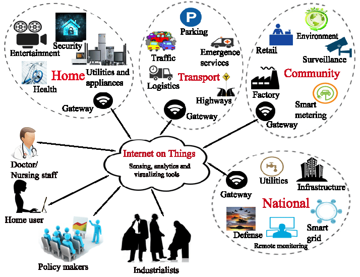

IoT Applications
Activity 1
IoT apps analyse vast volumes of linked sensor data in the cloud using machine learning algorithms. One can
see important performance factors, statistics for the average time between failures, and other data via
real-time IoT dashboards and alerts. Scalability, connectivity, artificial intelligence, security, dynamic
nature, endpoint management, integration, analysis, and compact nature of devices are the ten key
characteristics of the Internet of Things (IoT).
Activity 2
A technology becomes "smart" when it can interact and collaborate with other networked technologies, enabling
automatic or adaptive functioning as well as remote accessibility or operation from any location. Smart
buildings can be divided into three basic categories: residential, commercial, and industrial. Although they
may be different, the IoT devices used in these buildings do overlap.
Activity 3
Nevertheless, the integration of four separate elements—sensors/devices, connection, data processing, and a
user interface—makes all complete IoT systems the same. Thus, the high level features include - proper power
supply with the speed and efficiency of all the sewnsors including motion, voice/iris recognition by giving
indicatiuon through alarms. As a result, the user might be the management team, employees and the visitors.
Examples of IoT Applications
IOT applications run on IoT devices and can be created to be specific to almost every industry and vertical,
including healthcare, industrial automation, smart homes and buildings, automotive, and wearable technology.
Increasingly, IoT applications are using AI and machine learning to add intelligence to devices.

- Connected appliances
- Smart home security systems
- Autonomous farming equipment
- Wearable health monitors
- Smart factory equipmen
- Shipping container and logistics tracking